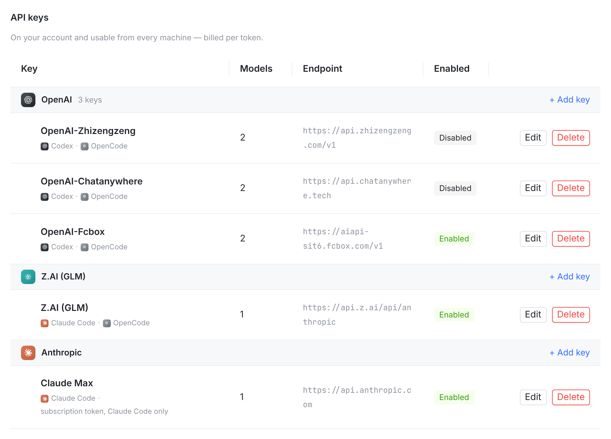
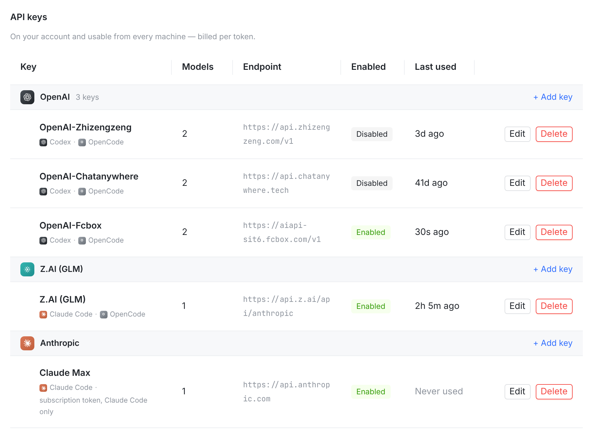

Infrastructure 页的 API keys 表 · 真实控制台渲染（本分支 web 构建，fixtures 数据）· 新列为提案注入


口径：会话真正在这把 key 上跑过才算使用（含通过账号池派发到它的会话；时间取该 key 名下会话的最后一次活动）。
只建了会话、从未运行的不算；从未被使用的 key 显示 Never used。
实现：服务端在 GET /providers/mine 里按会话现算（新增返回字段 lastUsedAt），不改数据库、不在派发路径写任何东西。
布局代价：新列 110px，Endpoint 由 200px 收窄到 170px（它本来就会折行）；列位置也可放到 Endpoint 与 Enabled 之间。